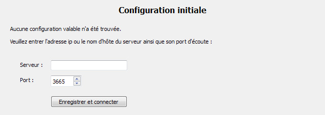

Documentation client
Configuration initiale du client
Lors du premier lancement du logiciel client, aucun fichier de configuration n'est trouvé. Le logiciel demande alors les informations de configuration : adresse IP ou hôte du serveur, port du serveur.

Lors de la validation de la configuration, le logiciel client tente de se connecter au serveur.
En cas de succès, il télécharge la clé publique RSA de celui-ci et écrit le fichier de configuration.
Les fichiers (clé publique RSA, fichier de configuration) sont enregistré dans HOME/spmd/
Note : le dossier HOME sous Unix correspond au dossier %USERPROFILE% sous Windows.
En cas d'erreur, un message est affiché.